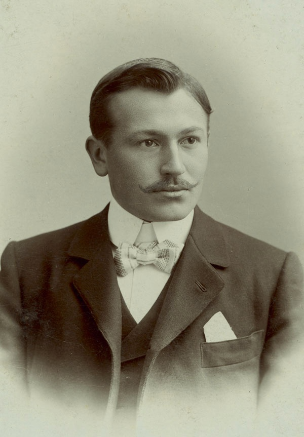

Our Story
A Legacy of Excellence

The Visionary
Hans Wilsdorf
In 1905, a young Hans Wilsdorf founded the company that would become Rolex. His vision was simple yet revolutionary — to place a reliable and precise watch on the wrist. What followed was a century of innovation that transformed the world of watchmaking forever.
Wilsdorf's relentless pursuit of perfection led to a series of groundbreaking inventions — the waterproof Oyster case, the self-winding Perpetual rotor, and the first wristwatch to display two time zones simultaneously.
Our Journey
120 Years of History
The Beginning
Hans Wilsdorf and Alfred Davis found the company in London, with a vision to create reliable wristwatches.
First Chronometer
A Rolex watch receives the first wristwatch chronometer certification from the Official Watch Rating Centre in Bienne.
Oyster Case
Rolex patents the Oyster — the world's first waterproof and dustproof wristwatch case.
Perpetual Rotor
Rolex invents the self-winding mechanism with a Perpetual rotor — a revolution in watchmaking.
Submariner
The Submariner is introduced — the first diver's watch waterproof to 100 metres.
Daytona
The Cosmograph Daytona is launched — destined to become one of the most iconic watches in history.
Centenary
Rolex celebrates 100 years of watchmaking excellence — a century of innovation, precision, and prestige.
120 Years
Rolex marks 120 years of crafting timepieces that define elegance, performance, and enduring value.
What We Stand For
Our Values
Precision
Every Rolex is a Superlative Chronometer — certified to perform to the highest standards of precision and reliability.
Excellence
From raw materials to the finished watch, every element of a Rolex is crafted to the most exacting standards.
Innovation
Rolex has been at the forefront of watchmaking innovation for over a century — pioneering technologies that have shaped the industry.
Legacy
A Rolex is not just a watch — it is an heirloom. Crafted to be passed down through generations, retaining its value and beauty.
A watch is not just a timepiece. It is a reflection of who you are — and who you aspire to be.